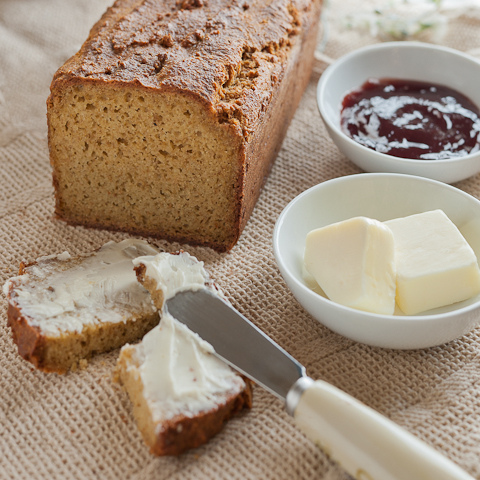

Мы с 2008 года производим, фасуем и занимаемся реализацией сливочного масла, спреда и маргарина. С ними делают бутерброды, крема для торта, ими заправляют каши и многое другое.
В своем распоряжении имеет автоматическую линию по производству спредов и маргаринов, позволяющую вырабатывать и расфасовывать продукцию высокого качества различной жирности в соответствии с ГОСТами и Техническим Регламентом Таможенного Союза.
Вся продукция предприятия имеет декларации соответствия ЕАС.
Производство ООО «Агропромсервис» сертифицировано по стандарту НАССР ISO 2200 ГОСТ ИСО 22000-2007 – системе менеджмента безопасности пищевой продукции.
Мы создаем только натуральный продукт, не содержащий компонентов, полученных из генетически модифицированных продуктов, без консервантов и транс изомеров жирных кислот
Интересные факты о нашей продукции. Посмотреть всё
Спредоброд – на завтрак. Вкус и польза одновременно. Большинство людей, толком не знакомых со спредом, на вопрос «Что же это такое?» – отвечают примерно так: «Наверное, новое сливочное масло». Или: «Это что-то вроде маргарина»… А как на самом деле?
ООО «Агропромсервис»
Юридический адрес: РФ, 440034, г.Пенза, ул. Калинина, д.108Б.
Адрес производства: РФ, 440528, Пензенская область, Пензенский район, с. Болословка, ул. Королева, д.22.
Тел.: +7 (841-2) 239-009, факс: +7 (841-2) 239-004.